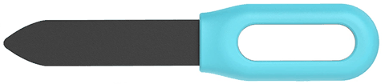
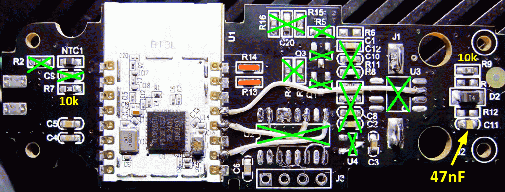
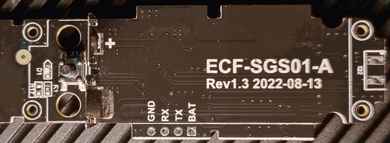
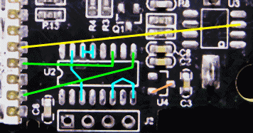
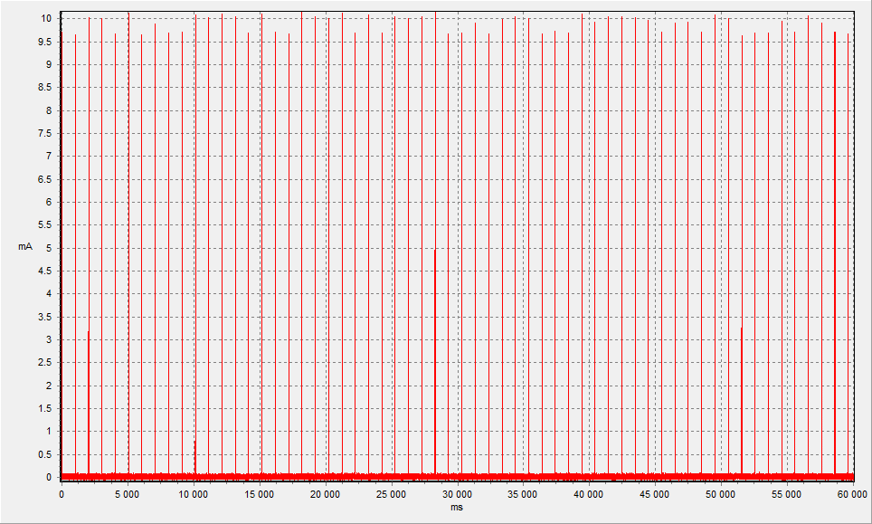
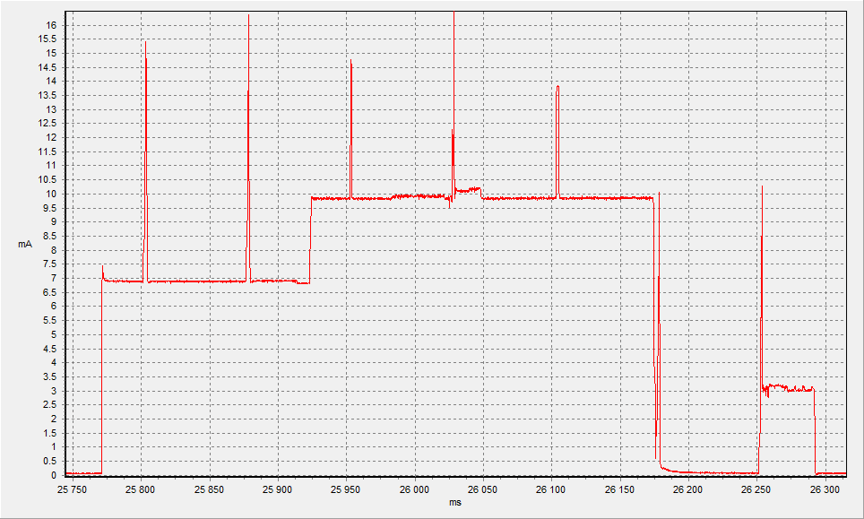
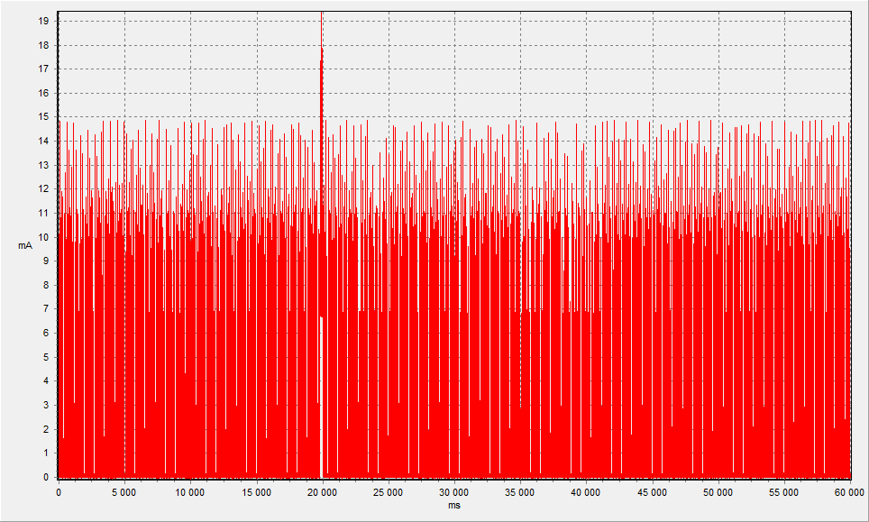
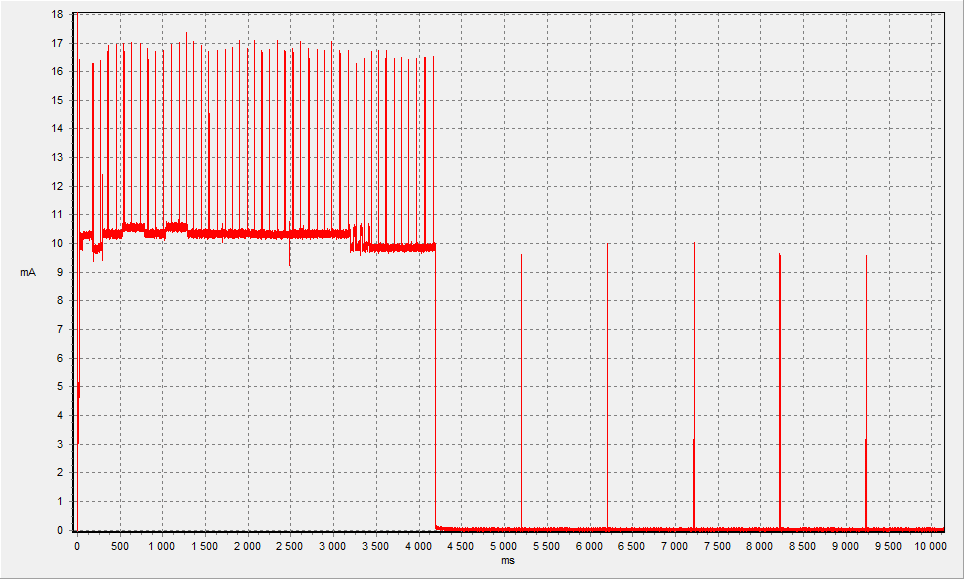

Tuya BLE "Plant monitor"
Bloetooth Plant monitor, Model: ECF-SGS01-A rev1.3

SoC: TLSR8250F512ET32 (Tuya module: BT3L), Q: 16MHz, Sensor:


Modification for alternative firmware
1. Remove all components on the PCB from the module side except: D2, R9, R7, NTC1, C3, C4, C5, C6:
2. Replace and install: C11 to 47 nF, R13 to jumper, R14 to jumper.
3. Set the jumpers:

discussions
issues 1
issues 2
Average consumption in original firmware from Tuya
Стабилизатор на 2.5V типа XC6206P252MR с маркировкой "65T5"
При отключенной нагрузке выдает 3.08В (на входе 3.3В)! При падении напряжения имеет повышенное потребление (+20мкА)!
Коммутация нагрузки через P-канальный полевой транзистор AO3401A с маркировкой "A19T" коммутируемый N-P-N транзистором SS8050 с маркировкой "Y1".
Нагрузка - это TL555С у которой на выходе меандр 1MHz идущий через резистор 10 кОм на центральный электрод емкостного датчика. От электрода далее на диод типа 1N4148WT с конденсатором порядка 1 мкФ.
Среднее потребление в промежутке без замеров 49.5 мкА (период BLE рекламы 1 сек):

Замер:

Потребление при открытом приложении Smart-Life или активеном режиме соединения с Tuya шлюзом:

Старт:

FullFlash bin (Tuya ver)
OTA bin (Tuya ver)